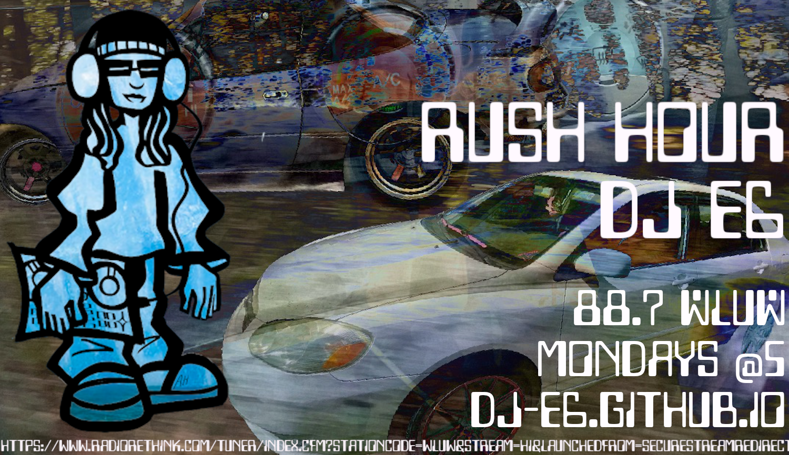

I livestream mixes weekly on my youtube channel. You can easily find my most recent mixes by visiting the "live" tab on my youtube channel. There is also a (nearly) complete archive of my series "rush hour" for 88.7 WLUW
\(*o*)/ ⸮(^ . ^)? /(#_#)\
rush hour is a weekly series of mixes all performed live by me, brodcasted over chicago fm airwaves from 88.7 wluw from fall 2022 through spring 2023. rush hour consists of tons of different genres, scenes, and songs that i personally love and wanted to offer to the chicago people!/(#_#)\ ⸮(^ . ^)? \(*o*)/
you can listen to them all, starting with episode 1 right here!
